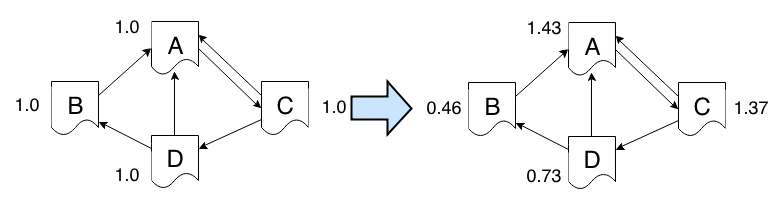

Ar-pagerank
Abstrakcja równoległa RDD
- RDD: Resilient Distributed Dataset
- https://www.cs.berkeley.edu/~matei/papers/2012/nsdi_spark.pdf
Apache Spark - instalacja i konfiguracja
- https://spark.apache.org/downloads.html
- Spark 1.0.2
- Pre-build for Hadoop 2.2
- http://d3kbcqa49mib13.cloudfront.net/spark-1.0.2-bin-hadoop2.tgz
Uruchamianie na Zeusie
- Należy zgłosić się do grupy
plgg-sparkprzy pomocy portalu PL-Grid: https://portal.plgrid.pl/web/guest/teams - Instrukcja: https://docs.cyfronet.pl/display/~plgmyco/Hadoop+and+Spark+with+Cyfronet+PBS
- Ustawienie środowiska dla zadań Spark:
source $PLG_GROUPS_STORAGE/plgg-spark/set_env_spark-1.0.0.sh
- Uruchomienie interaktywnej konsoli Spark:
qsub -I -q plgrid-testing -l nodes=1:ppn=12 $SPARK_HOME/bin/spark-shell
RDD - przykład lista
- Tablica
scala> val listData = Array(1,3,2,1,3,1,3,4,4,1,4,2)
listData: Array[Int] = Array(1, 3, 2, 1, 3, 1, 3, 4, 4, 1, 4, 2)
- RDD representujące listę
scala> val listRDD = sc.parallelize(listData)
listRDD: org.apache.spark.rdd.RDD[Int] = ParallelCollectionRDD[9] at parallelize at <console>:14
RDD - przykład operacje na listach
- Operacja
map()
scala> val squares = listRDD.map(x => x*x)
squares: org.apache.spark.rdd.RDD[Int] = MappedRDD[10] at map at <console>:16
- Przekształcenie w tablicę (np. do wypisania)
scala> squares.collect
res5: Array[Int] = Array(1, 9, 4, 1, 9, 1, 9, 16, 16, 1, 16, 4)
- Operacja
reduce()
scala> squares.reduce(_+_)
res6: Int = 87
RDD - przykład plik
- Wczytanie pliku
scala> val textFile = sc.textFile("/etc/passwd")
textFile: org.apache.spark.rdd.RDD[String] = MappedRDD[1] at textFile at <console>:12
- Ilość linii
scala>textFile.count() // Number of items in this RDD
res1: Long = 41
RDD - przykład linie w pliku
- Filtrowanie linii zawierających
bash
scala> val linesWithBash = textFile.filter(line => line.contains("bash"))
linesWithBash: org.apache.spark.rdd.RDD[String] = FilteredRDD[4] at filter at <console>:14
- Zliczanie linii zawierających
bash
scala> linesWithBash.count
res2: Long = 3
PageRank
- Brin, S.; Page, L. (1998). "The anatomy of a large-scale hypertextual Web search engine". Computer Networks and ISDN Systems 30: 107–117. doi:10.1016/S0169-7552(98)00110-X. ISSN 0169-7552. http://infolab.stanford.edu/pub/papers/google.pdf
- Ian Rogers, Pagerank Explained Correctly with Examples: http://www.cs.princeton.edu/~chazelle/courses/BIB/pagerank.htm
PR(A) = (1-d) + d (PR(T1)/C(T1) + ... + PR(Tn)/C(Tn))d = 0.85

PageRank - algorytm
- Każdy węzeł zaczyna z
PR = 1 - W każdym kroku węzeł
pprzekazujePR(p)/C(p)swoim sąsiadom, gdzieC(p)to ilość sąsiadów - Nowa wartość
PR = 0.15 + 0.85 * Sum(contribs)

PageRank - przykład (1)
import org.apache.spark.SparkContext
import org.apache.spark.SparkContext._
import org.apache.spark.SparkConf
object SimplePageRank {
def main(args: Array[String]) {
val ITERATIONS = 10
val conf = new SparkConf().setAppName("Simple PageRank")
val sc = new SparkContext(conf)
PageRank - przykład (2)
// Prepare data
val linksData = Array(("a","c"),("b","a"),("c","a"),("c","d"),("d","a"),("d","b"))
// RDD of (url, url) pairs
// RDD[(String, String)]
val linksRDD = sc.parallelize(linksData)
// RDD of (url, neighbors) pairs
// RDD[(String, Iterable[String])]
val links = linksRDD.distinct().groupByKey().cache()
// RDD of (url, rank) pairs
// RDD[(String, Double)]
// Pass each value in the key-value pair RDD through a map function without changing the keys;
// this also retains the original RDD's partitioning.
var ranks = links.mapValues(v => 1.0)
PageRank - przykład (3)
for (i <- 1 to ITERATIONS) {
val contribs = links.join(ranks).values.flatMap {
case (urls, rank) =>
val size = urls.size
urls.map(url => (url, rank / size))
}
ranks = contribs.reduceByKey(_ + _).mapValues(0.15 + 0.85 * _)
}
// Return an array that contains all of the elements in this RDD.
val output = ranks.collect()
output.foreach(tup => println(tup._1 + " has rank: " + tup._2 + "."))
sc.stop()
}
}
PageRank - przykład z wczytywaniem z pliku:
package org.apache.spark.examples
import org.apache.spark.SparkContext._
import org.apache.spark.{SparkConf, SparkContext}
object SparkPageRank {
def main(args: Array[String]) {
if (args.length < 1) {
System.err.println("Usage: SparkPageRank <file> <iter>")
System.exit(1)
}
val sparkConf = new SparkConf().setAppName("PageRank")
val iters = if (args.length > 0) args(1).toInt else 10
val ctx = new SparkContext(sparkConf)
val lines = ctx.textFile(args(0), 1)
val links = lines.map{ s =>
val parts = s.split("\\s+")
(parts(0), parts(1))
}.distinct().groupByKey().cache()